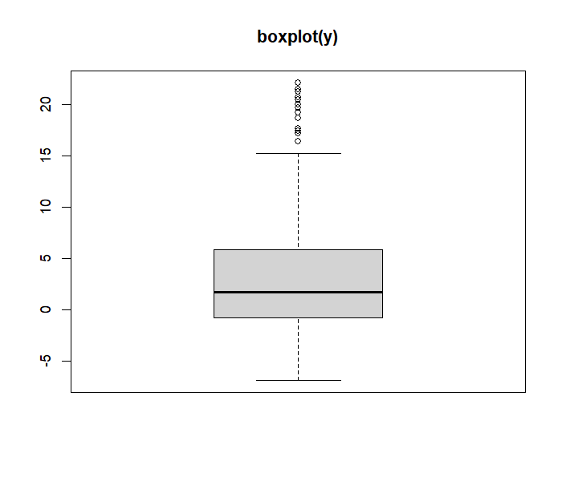
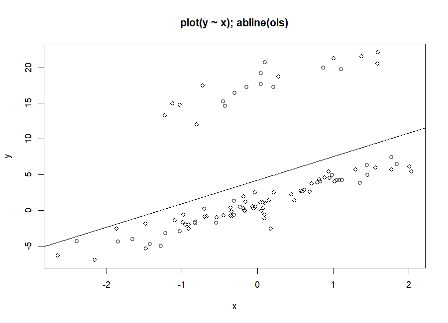
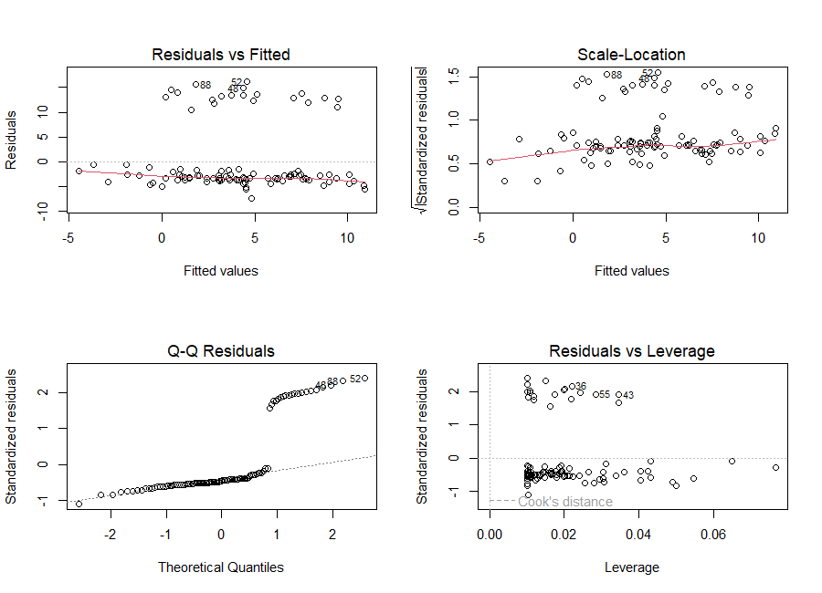
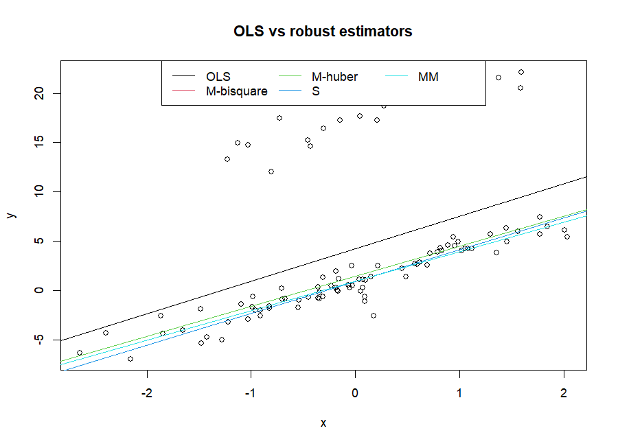
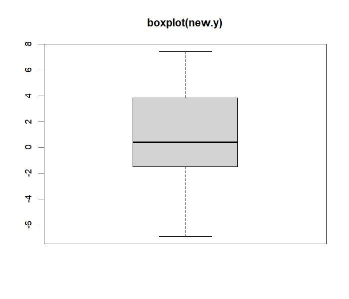
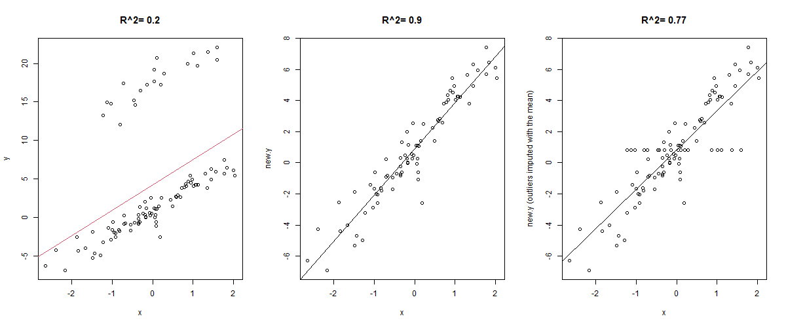

<!DOCTYPE html>
<html lang="en">
<head>
<meta charset="UTF-8">
<meta name="viewport" content="width=device-width, initial-scale=1.0">
<title>L5 · Robust Regression — DS550</title>
<link rel="preconnect" href="https://fonts.googleapis.com">
<link rel="preconnect" href="https://fonts.gstatic.com" crossorigin>
<link href="https://fonts.googleapis.com/css2?family=Atkinson+Hyperlegible:ital,wght@0,400;0,700;1,400&family=Caveat:wght@500;700&family=Fraunces:ital,opsz,wght@0,9..144,400..800;1,9..144,400..700&family=JetBrains+Mono:wght@400;700&display=swap" rel="stylesheet">
<link rel="stylesheet" href="https://cdn.jsdelivr.net/npm/katex@0.16.9/dist/katex.min.css">
<script defer src="https://cdn.jsdelivr.net/npm/katex@0.16.9/dist/katex.min.js"></script>
<script defer src="https://cdn.jsdelivr.net/npm/katex@0.16.9/dist/contrib/auto-render.min.js"></script>
<link rel="stylesheet" href="assets/style.css">
<script src="assets/data/outliers.js"></script>
<script src="assets/site.js"></script>
<script>
const LOAD = 'dataset_outliers = read.csv("dataset_outliers.csv")\ny = dataset_outliers$y; x = dataset_outliers$x\n';
window.R_SNIPPETS = [
  { label: 'OLS', code: LOAD + 'ols = lm(y ~ x)\nsummary(ols)\nplot(y ~ x); abline(ols)' },
  { label: 'boxplot', code: LOAD + 'bp = boxplot(y)\nbp$out' },
  { label: 'diagnostics', code: LOAD + 'ols = lm(y ~ x)\npar(mfcol = c(2, 2)); plot(ols)\nshapiro.test(ols$residuals)' },
  { label: 'lmtest tests', code: '# downloads lmtest into the browser the first time\nwebr::install("lmtest")\nlibrary(lmtest)\n' + LOAD + 'ols = lm(y ~ x)\nharvtest(ols, order.by = ~ x)\ngqtest(ols, order.by = ~ x)' },
  { label: 'robust fits', code: 'library(MASS)\n' + LOAD + 'summary(rlm(y ~ x, method = "M", psi = psi.bisquare))\nsummary(rlm(y ~ x, psi = psi.huber))\nlqs(y ~ x, method = "S")\nsummary(rlm(y ~ x, method = "MM"))' },
  { label: 'weights', code: 'library(MASS)\n' + LOAD + 'r = rlm(y ~ x, psi = psi.bisquare)\nround(sort(r$w), 3)\nsum(r$w == 0)' },
  { label: 'remove outliers', code: LOAD + 'upper = median(y) + 1.5 * IQR(y)\nlower = median(y) - 1.5 * IQR(y)\nnew.y = y\nnew.y[y > upper | y < lower] = NA\nsummary(lm(new.y ~ x))' }
];
</script>
</head>
<body data-page="l5">

<header class="hero">
  <div class="hero-inner">
    <div class="big-num">05</div>
    <div>
      <div class="kicker">Lecture 5 · outliers &amp; robust regression</div>
      <h1>When a few points <em>lie</em>: outliers and <em>robust</em> regression</h1>
      <p class="lead">OLS listens to every point equally, so a handful of extreme values can drag the whole line away from where the data really is. This lecture fits OLS to a dataset with 20 outliers, checks it with diagnostic plots and three formal tests, then compares four robust estimators (M-bisquare, M-Huber, S and MM) with two "manual" fixes: deleting the outliers, and deleting then imputing them.</p>
      <div class="chips"><span class="chip">boxplot</span><span class="chip">plot(ols)</span><span class="chip">shapiro.test</span><span class="chip">harvtest</span><span class="chip">gqtest</span><span class="chip">rlm · psi.bisquare · psi.huber</span><span class="chip">lqs S</span><span class="chip">MM</span><span class="chip">IQR rule</span></div>
      <div class="hero-meta"><span><b>Source:</b> Lec 5/Lec 5 DS550 -- Robust Regression.R (Dr. Mohamed R. Abonazel)</span><span><b>Data:</b> dataset_outliers.csv</span><span><b>Videos:</b> Lec 5 parts 1–2</span></div>
    </div>
  </div>
</header>

<div class="page">
<aside class="toc"></aside>
<main class="content">

<section class="section" id="s-what">
  <div class="sec-head"><span class="sec-num">5.1</span><h2>What is an outlier, and why does OLS care so much?</h2></div>
  <p>An <strong>outlier</strong> is an observation that doesn't follow the pattern of the rest of the data. In regression we distinguish:</p>
  <div class="grid3">
    <div class="card rose"><span class="tag">vertical outlier</span><h4>Unusual y</h4><p>A normal x but a y far above or below the line. Our dataset has 20 of these.</p></div>
    <div class="card amber"><span class="tag">leverage point</span><h4>Unusual x</h4><p>An x far from the others. It has a long "lever arm", so it can tilt the line a lot.</p></div>
    <div class="card violet"><span class="tag">influential point</span><h4>Changes the fit</h4><p>A point whose removal noticeably changes the coefficients. Cook's distance measures this.</p></div>
  </div>
  <p>OLS minimises the sum of <strong>squared</strong> residuals. Squaring makes a residual of 10 count 100 times more than a residual of 1, so the line bends towards distant points to shrink their huge squares. In the extreme, moving <em>one single point</em> far enough can move the OLS line anywhere. Statisticians say OLS has a <strong>breakdown point of 0%</strong>: it takes only a vanishing fraction of bad data to ruin it.</p>
  <div class="widget" id="w-pull">
    <div class="w-head"><span class="w-badge">play</span><span class="w-title">Drag one point and watch the two lines</span></div>
    <div class="w-body">
      <p class="hint">Drag the red point up or down (or sideways to make it a leverage point). Black = OLS, red = robust (bisquare M-estimator, the same method as <code>rlm(..., psi = psi.bisquare)</code>).</p>
      <svg id="pull-svg"></svg>
      <div class="readout" id="pull-stats"></div>
      <div class="explain" id="pull-exp"></div>
    </div>
  </div>
</section>

<section class="section" id="s-ols">
  <div class="sec-head"><span class="sec-num">5.2</span><h2>The data and the OLS fit</h2></div>
  <div class="code" data-label="Robust Regression.R — prepare and read"><pre class="r">
rm(list = ls(all = TRUE)) # Remove all objects in R console
set.seed(09061982)        # Set the seed for reproducible results
dataset_outliers=read.csv("dataset_outliers.csv")
names(dataset_outliers)
attach(dataset_outliers)
</pre><div class="out"><pre>[1] "y" "x"</pre></div></div>
  <p>100 observations of a response <code>y</code> and one predictor <code>x</code>. <code>attach()</code> lets us write <code>y</code> and <code>x</code> instead of <code>dataset_outliers$y</code> (remember the warning from Lecture 2: convenient but risky).</p>
  <div class="code" data-label="Robust Regression.R — 1- OLS estimation"><pre class="r">
ols=lm(y~x)
summary(ols)
boxplot(y)
plot(y~x)
abline(ols)
</pre><div class="out" data-label="R output — click highlights"><pre>Call:
lm(formula = y ~ x)

<span class="ann" data-n="&lt;b&gt;Look at the residuals first.&lt;/b&gt; The median residual is &lt;b&gt;−3.03&lt;/b&gt; and 75% of residuals are below −1.6, while the maximum is +16.1. Most points lie &lt;i&gt;below&lt;/i&gt; the line: the line has been pulled up by a few very large values. In a healthy model the median is near 0 and Min/Max are balanced.">Residuals:
   Min     1Q Median     3Q    Max
-7.386 -3.697 -3.027 -1.619 16.148</span>

Coefficients:
            Estimate Std. Error t value Pr(>|t|)
<span class="ann" data-n="&lt;b&gt;Intercept 4.22&lt;/b&gt;: for the bulk of the data the line should cross x = 0 near y ≈ 1 (that's what the robust methods and the clean data give). The outliers lift it by more than 3 units.">(Intercept)   4.2230     0.6767   6.241 1.11e-08 ***</span>
<span class="ann" data-n="&lt;b&gt;Slope 3.30&lt;/b&gt;: still significant, and not far from the ≈ 3.0 the clean data shows, because the outliers are spread across all x values. They mostly shift the line &lt;i&gt;up&lt;/i&gt; rather than tilt it.">x             3.2985     0.6632   4.973 2.80e-06 ***</span>
---
<span class="ann" data-n="&lt;b&gt;Residual standard error 6.77&lt;/b&gt;: the typical miss. For the clean 80 points it is only about 1.05 — the 20 outliers inflate the error more than six times.">Residual standard error: 6.766 on 98 degrees of freedom</span>
<span class="ann" data-n="&lt;b&gt;R² = 0.20&lt;/b&gt;: x explains only 20% of the variation in y. That sounds like a weak relationship, but it's an illusion created by the outliers: without them R² is 0.90 (section 5.6).">Multiple R-squared:  0.2015,	Adjusted R-squared:  0.1934</span>
F-statistic: 24.74 on 1 and 98 DF,  p-value: 2.804e-06</pre></div></div>
  <div class="callout trap"><div class="c-title">From the lecture — significant ≠ good</div><p>Every coefficient here has stars and the F-test is significant, so someone who stops at <code>summary()</code> would accept this model. The professor's point: the fitted line passes through <em>neither</em> group of points, so it is useless for interpretation or prediction. A model has to pass the <strong>diagnostic checks</strong> (next section), not just the significance tests.</p></div>
  <div class="fig-row">
    <figure class="figure"><figcaption><b>boxplot(y).</b> The box (middle 50%) is from about −0.8 to 5.8, and a group of points sits far above the top whisker.</figcaption></figure>
    <figure class="figure"><figcaption><b>plot(y ~ x); abline(ols).</b> The main cloud follows a clear straight line, but a separate group of 20 points floats about 15 units above it. The OLS line runs <i>between</i> the two groups and fits neither well. The professor drew in class the line the data really follows: through the lower cloud.</figcaption></figure>
  </div>
</section>

<section class="section" id="s-diag">
  <div class="sec-head"><span class="sec-num">5.3</span><h2>Diagnosing the OLS model</h2></div>
  <p>Before choosing a fix we check which OLS assumption is actually broken. The script calls this part "Four Diagnostics": the four <code>plot(ols)</code> panels plus formal tests for normality, linearity and constant variance.</p>
  <div class="code" data-label="Robust Regression.R — a. normality of residuals"><pre class="r">
windows()
par(mfcol=c(2,2))
plot(ols)
shapiro.test(ols$residuals)
</pre><div class="out"><pre>	Shapiro-Wilk normality test

data:  ols$residuals
W = 0.64596, <span class="hl">p-value = 3.51e-14</span></pre></div></div>
  <figure class="figure"><figcaption><span class="hand">par(mfcol = c(2,2)); plot(ols)</span> — <code>mfcol</code> fills the 2×2 grid column by column (Residuals vs Fitted, Q-Q, then Scale-Location, Leverage). In every panel the 20 outliers form their own separate group — exactly the points the professor circled in red in the lecture.</figcaption></figure>
  <ul>
    <li><strong>Residuals vs Fitted:</strong> two horizontal bands, a big one slightly below 0 and a small one around +15. Not a random cloud.</li>
    <li><strong>Normal Q-Q:</strong> the points follow the line, then jump up sharply at the right end: a heavy right tail.</li>
    <li><strong>Scale-Location / Residuals vs Leverage:</strong> the same group stands out with large standardised residuals, although none of them has unusual leverage (their x values are ordinary).</li>
    <li><strong>Shapiro–Wilk:</strong> W = 0.646 (far from 1), p = 3.5×10⁻¹⁴ &lt; 0.05 → <strong>reject normality</strong>.</li>
  </ul>

  <h3>b. Linearity: the Harvey–Collier test</h3>
  <div class="code" data-label="Robust Regression.R — b. linearity test"><pre class="r">
library(lmtest)
harvtest(ols)
</pre><div class="out"><pre>	Harvey-Collier test

data:  ols
HC = 0.16906, df = 97, <span class="hl">p-value = 0.8661</span></pre></div></div>
  <div class="grid2">
    <div class="card"><span class="tag">hypotheses</span><h4>H₀: the relationship is linear</h4><p>H₁: it is not (e.g. curved). The test looks at whether the <em>recursive residuals</em> (prediction errors made as the observations are added one by one) drift systematically.</p></div>
    <div class="card teal"><span class="tag">result</span><h4>p = 0.866 &gt; 0.05</h4><p><strong>Do not reject H₀</strong>: no evidence against a straight line. The problem is not the shape of the relationship.</p></div>
  </div>

  <h3>c. Constant variance: the Goldfeld–Quandt test</h3>
  <div class="code" data-label="Robust Regression.R — c. heteroskedasticity test"><pre class="r">
library(lmtest)
##  perform Goldfeld-Quandt test
gqtest(ols)
</pre><div class="out"><pre>	Goldfeld-Quandt test

data:  ols
GQ = 1.3782, df1 = 48, df2 = 48, <span class="hl">p-value = 0.135</span>
alternative hypothesis: variance increases from segment 1 to 2</pre></div></div>
  <div class="grid2">
    <div class="card"><span class="tag">how it works</span><h4>Split, fit twice, compare</h4><p>The data is split into a first and a second half, a regression is fitted to each, and GQ = (variance of half 2) ÷ (variance of half 1). df = 50 − 2 = 48 in each half. H₀: equal variance (homoscedasticity).</p></div>
    <div class="card teal"><span class="tag">result</span><h4>p = 0.135 &gt; 0.05</h4><p><strong>Do not reject H₀</strong>: no evidence that the error variance changes.</p></div>
  </div>
  <div class="callout note"><div class="c-title">Tip — tell the tests which order to use</div><p><code>harvtest()</code> and <code>gqtest()</code> assume the rows are already sorted in a meaningful order (like time). Our file is <strong>not sorted by x</strong>, so the calls above test the file's row order. To test linearity and variance <em>along x</em>, add <code>order.by = ~ x</code>: <code>harvtest(ols, order.by = ~ x)</code> gives p = 0.49 and <code>gqtest(ols, order.by = ~ x)</code> gives p = 0.22. Same conclusions here, but it's the right habit.</p></div>
  <div class="callout key"><div class="c-title">Diagnosis</div><p>Linearity ✓, constant variance ✓, normality ✗. The only problem is a group of outliers that makes the residuals non-normal and drags the line. The model form is fine — we need an <strong>estimation method that isn't fooled by outliers</strong>.</p></div>
</section>

<section class="section" id="s-idea">
  <div class="sec-head"><span class="sec-num">5.4</span><h2>The idea of robust regression</h2></div>
  <p>Every regression method chooses the line that minimises some total "penalty" of the residuals. OLS uses the square. Robust methods use a penalty function \(\rho\) that grows <strong>more slowly</strong> for large residuals, so a far-away point can't dominate:</p>
  <div class="formula">$$ \text{OLS: } \min \sum e_i^2 \qquad\qquad \text{M-estimation: } \min \sum \rho\!\left(\frac{e_i}{s}\right) $$<span class="f-cap">s = a robust estimate of the residual spread (based on the median absolute residual), so the method works whatever the units of y</span></div>
  <div class="callout plain"><div class="c-title">in plain words</div><p>OLS is a teacher who grades every student's opinion equally, even the one shouting nonsense from the back. A robust method listens to everyone at first, notices who is far from the consensus, and turns their volume down — or off — before deciding.</p></div>
  <p>In practice an M-estimate is found by <strong>iteratively reweighted least squares (IRLS)</strong>: fit, compute each point's standardised residual \(u_i = e_i/s\), give it a weight \(w(u_i)\) (1 = full say, 0 = ignored), refit a <em>weighted</em> least squares line, and repeat until nothing changes.</p>
  <div class="table-wrap"><table class="t">
    <tr><th>Method</th><th>Penalty ρ(u)</th><th>Weight w(u)</th><th>Effect on a huge residual</th></tr>
    <tr><td>OLS</td><td class="mono">u²</td><td class="mono">1</td><td>Full influence, growing without limit</td></tr>
    <tr><td>Huber (k = 1.345)</td><td>u² for small u, then grows only linearly</td><td class="mono">min(1, k/|u|)</td><td>Reduced, but <strong>never zero</strong></td></tr>
    <tr><td>Tukey bisquare (c = 4.685)</td><td>levels off completely beyond c</td><td class="mono">(1 − (u/c)²)² if |u| &lt; c, else 0</td><td><strong>Ignored completely</strong> (weight 0)</td></tr>
  </table></div>
  <div class="widget" id="w-rho">
    <div class="w-head"><span class="w-badge">explore</span><span class="w-title">Penalty and weight functions</span></div>
    <div class="w-body">
      <div class="controls"><span class="seg"><button class="btn on" data-v="rho">penalty ρ(u)</button><button class="btn" data-v="w">weight w(u)</button></span></div>
      <div class="slider"><label for="rho-k">Huber k</label><input type="range" id="rho-k" min="0.5" max="3" step="0.005" value="1.345"><output id="rho-ko"></output></div>
      <div class="slider"><label for="rho-c">bisquare c</label><input type="range" id="rho-c" min="2" max="8" step="0.005" value="4.685"><output id="rho-co"></output></div>
      <svg id="rho-svg"></svg>
      <div class="explain" id="rho-exp"></div>
    </div>
  </div>
  <div class="callout note"><div class="c-title">Why 1.345 and 4.685?</div><p>These default tuning constants make the methods <strong>95% as efficient as OLS</strong> when the errors really are normal: you lose very little when there are no outliers, and gain a lot when there are. A smaller constant is more robust but less efficient.</p></div>

  <div class="widget" id="w-irls">
    <div class="w-head"><span class="w-badge">step through</span><span class="w-title">IRLS on the lecture data — watch the outliers get switched off</span></div>
    <div class="w-body">
      <div class="controls"><span class="seg"><button class="btn on" data-m="bisquare">bisquare</button><button class="btn" data-m="huber">Huber</button></span><button class="btn" id="irls-reset">↺ start (OLS)</button><button class="btn primary" id="irls-step">next iteration →</button><button class="btn ghost" id="irls-run">run to convergence</button></div>
      <svg id="irls-svg"></svg>
      <div class="readout" id="irls-stats"></div>
      <div class="explain" id="irls-exp"></div>
    </div>
  </div>
</section>

<section class="section" id="s-robust">
  <div class="sec-head"><span class="sec-num">5.5</span><h2>The four robust estimators in R</h2>
  </div>
  <h3>M-estimator with Tukey's bisquare</h3>
  <div class="code" data-label="Robust Regression.R — 2- robust estimators"><pre class="r">
library(MASS)
Robust_1 &lt;- rlm(y ~ x, method="M",psi = psi.bisquare)
summary(Robust_1)
</pre><div class="out" data-label="R output — click highlights"><pre>Call: rlm(formula = y ~ x, psi = psi.bisquare, method = "M")
<span class="ann" data-n="&lt;b&gt;Residuals now look very different from OLS:&lt;/b&gt; the median is close to 0 (0.17) and the middle 50% lies between −0.41 and 1.60 — the line goes through the bulk of the data. The outliers keep huge residuals (max 19.45) because the line no longer tries to reach them. That's the point: robust fits &lt;i&gt;expose&lt;/i&gt; outliers instead of hiding them.">Residuals:
    Min      1Q  Median      3Q     Max
-4.0599 -0.4089  0.1719  1.6026 19.4509</span>

Coefficients:
            <span class="ann" data-n="&lt;b&gt;No p-values!&lt;/b&gt; &lt;code&gt;summary.rlm&lt;/code&gt; reports Value, Std. Error and t value only, because the exact distribution of robust estimators isn't a simple t-distribution. Rule of thumb: |t| &gt; 2 means significant at about 5%. Here both t values are huge (8.5 and 27.5).">Value   Std. Error t value</span>
<span class="ann" data-n="&lt;b&gt;Intercept 0.95&lt;/b&gt; (OLS: 4.22). The line now crosses x = 0 where the main cloud does.">(Intercept)  0.9508  0.1112     8.5472</span>
<span class="ann" data-n="&lt;b&gt;Slope 3.00&lt;/b&gt; (OLS: 3.30). Notice the standard error dropped from 0.66 to 0.11: the estimate is far more precise because it isn't fighting the outliers.">x            2.9964  0.1090    27.4803</span>

<span class="ann" data-n="&lt;b&gt;Residual standard error 1.254&lt;/b&gt; — a &lt;i&gt;robust&lt;/i&gt; scale estimate of the spread of the good points (OLS: 6.77). It is not computed from all squared residuals.">Residual standard error: 1.254 on 98 degrees of freedom</span></pre></div></div>
  <p><code>rlm</code> = <strong>r</strong>obust <strong>l</strong>inear <strong>m</strong>odel, from the <strong>MASS</strong> package (it comes with R, no install needed). <code>psi</code> chooses the weight function; <code>psi.bisquare</code> is Tukey's.</p>

  <h3>M-estimator with Huber's function</h3>
  <div class="code" data-label="Robust Regression.R"><pre class="r">
Robust_2 &lt;- rlm(y ~ x, psi= psi.huber)
summary(Robust_2)
</pre><div class="out"><pre>Coefficients:
            Value   Std. Error t value
(Intercept)  1.4536  0.1689     8.6053
x            3.0338  0.1656    18.3246

Residual standard error: 1.399 on 98 degrees of freedom</pre></div></div>
  <p>Huber is the default for <code>rlm</code> (writing <code>psi = psi.huber</code> just makes it explicit). Its intercept, <strong>1.45</strong>, is noticeably higher than bisquare's 0.95. Huber weights never reach zero, so the 20 outliers still pull the line up a little. Use the IRLS widget above with "Huber" to see it.</p>

  <h3>S-estimator</h3>
  <div class="code" data-label="Robust Regression.R"><pre class="r">
Robust_S&lt;-lqs(y ~ x,method ="S")
Robust_S
</pre><div class="out"><pre>Call:
lqs.formula(formula = y ~ x, method = "S")

Coefficients:
(Intercept)            x
     0.9016       3.2238

Scale estimates 1.299</pre></div></div>
  <p>An <strong>S-estimator</strong> takes a different route: it picks the line that makes a <em>robust measure of the residuals' spread</em> (Scale) as small as possible. It has the highest possible <strong>breakdown point, 50%</strong>: up to half the data could be outliers and it would still find the majority's line. The price is lower efficiency (more random wobble), which is why its slope here (3.22) is a bit further from 3 than the others. <code>lqs</code> (from MASS) prints only coefficients and the scale, no standard errors.</p>

  <h3>MM-estimator</h3>
  <div class="code" data-label="Robust Regression.R"><pre class="r">
Robust_MM &lt;- rlm(y ~ x, method = "MM",psi= psi.huber)
summary(Robust_MM)
</pre><div class="out"><pre>Coefficients:
            Value   Std. Error t value
(Intercept)  0.9487  0.1114     8.5189
x            2.9954  0.1092    27.4424

Residual standard error: 1.299 on 98 degrees of freedom</pre></div></div>
  <p><strong>MM</strong> combines the best of both: it starts from an S-estimate (50% breakdown, finds the right region) and then refines it with an efficient M-step. That's why it is often recommended as the default robust method. The professor's analogy: it's like washing clothes twice — usually cleaner, but if the first wash already did the job, the second adds nothing. So MM is not automatically the best; you still compare.</p>
  <div class="callout warn"><div class="c-title">Detail — psi.huber is ignored here</div><p>Inside <code>MASS::rlm</code>, <code>method = "MM"</code> always uses the <strong>bisquare</strong> function for the M-step (Huber can't be used, since it doesn't fully reject outliers after the S start). The <code>psi = psi.huber</code> in the script is silently ignored — which is why the MM result (0.9487, 2.9954) is almost identical to M-bisquare (0.9508, 2.9964) and not to M-Huber.</p></div>

  <figure class="figure"><figcaption><span class="hand">all five lines together</span> — <code>abline(Robust_1, col = 2)</code> etc. adds each fit in a different colour; <code>legend("top", ..., col = 1:5, ncol = 3)</code> labels them. The four robust lines lie on top of each other through the main cloud; only OLS (black) is lifted towards the outliers.</figcaption></figure>
  <div class="callout note"><div class="c-title">If your plot looks squashed</div><p>The script sets <code>par(mfcol = c(2,2))</code> for the diagnostic plots and doesn't reset it. In RStudio (without <code>windows()</code>) every later plot then lands in one quarter of the plot area. Run <code>par(mfcol = c(1,1))</code> — or the professor's <code>windows()</code>, which opens a fresh plot window — before the next plot.</p></div>
</section>

<section class="section" id="s-remove">
  <div class="sec-head"><span class="sec-num">5.6</span><h2>Alternative: find the outliers and remove them</h2></div>
  <div class="code" data-label="Robust Regression.R — 3- remove the outliers, use OLS"><pre class="r">
bp=boxplot(y)
lower=median (y)-1.5* IQR(y)
upper=median (y)+1.5* IQR(y)
new.y=y
new.y[y>upper]=NA
new.y[y<lower]=NA
summary(new.y)
boxplot(new.y)
new.ols=lm(new.y ~ x )
summary(new.ols)
</pre><div class="out"><pre>   Min. 1st Qu.  Median    Mean 3rd Qu.    Max.     NAs
-6.9235 -1.4605  0.3922  0.8116  3.8195  7.4384      <span class="hl">20</span>

Coefficients:
            Estimate Std. Error t value Pr(>|t|)
(Intercept)   0.9129     0.1176   7.761 2.73e-11 ***
x             2.9789     0.1118  26.640  &lt; 2e-16 ***
---
Residual standard error: 1.051 on 78 degrees of freedom
  (20 observations deleted due to missingness)
Multiple R-squared:  <span class="hl">0.901</span>,	Adjusted R-squared:  0.8997</pre></div></div>
  <ul>
    <li><code>IQR(y)</code> = interquartile range = Q3 − Q1 = 6.57. The fences are median ± 1.5 × IQR = <strong>−8.17</strong> and <strong>11.55</strong>.</li>
    <li>Values outside the fences are set to <code>NA</code> (we reuse Lecture 4's idea: mark as missing) and <code>lm</code> drops them: 20 removed, all above the upper fence.</li>
    <li>The clean fit is <strong>0.913 + 2.979x</strong> with R² = 0.90 — practically the same line as M-bisquare and MM, which found it <em>without</em> deleting anything.</li>
  </ul>
  <div class="widget" id="w-fence">
    <div class="w-head"><span class="w-badge">compare</span><span class="w-title">Which points does each outlier rule flag?</span></div>
    <div class="w-body">
      <div class="controls"><span class="seg"><button class="btn on" data-r="med">median ± 1.5·IQR (script)</button><button class="btn" data-r="box">Q1 − 1.5·IQR / Q3 + 1.5·IQR (boxplot)</button></span></div>
      <div class="slider"><label for="fence-k">multiplier</label><input type="range" id="fence-k" min="0.5" max="3" step="0.1" value="1.5"><output id="fence-ko"></output></div>
      <svg id="fence-svg"></svg>
      <div class="readout" id="fence-stats"></div>
      <div class="explain" id="fence-exp"></div>
    </div>
  </div>
  <div class="callout key"><div class="c-title">Masking — why the script uses the median</div><p>The usual boxplot rule (what <code>boxplot(y)</code> draws and <code>bp$out</code> returns) uses Q1 and Q3 as the starting points. Here it flags only <strong>14</strong> of the 20 outliers, because the outliers themselves push Q3 up and widen the fence — they partly <em>hide each other</em>. Starting from the median, which barely moves, catches all 20.</p></div>
  <div class="fig-row">
    <figure class="figure"><figcaption><b>boxplot(new.y).</b> After removing the 20 values, no points remain outside the whiskers.</figcaption></figure>
    <figure class="figure"><figcaption><b>Left:</b> all data, OLS, R² = 0.20. <b>Middle:</b> outliers removed, R² = 0.90. <b>Right:</b> outliers replaced by the mean (section 5.7), R² = 0.77 — notice the horizontal row of imputed points.</figcaption></figure>
  </div>
  <div class="callout trap"><div class="c-title">Deleting data is a decision, not a formula</div><ul>
    <li><strong>The professor's 5% rule</strong> (the same as for missing data in Lecture 4): if outliers are 5% of the data or less, deleting them — or deleting and imputing — is acceptable. Here they are <strong>20%</strong>, so it isn't: the right fix is robust regression, which changes the <em>estimator</em> instead of throwing data away.</li>
    <li>Only delete an outlier if you have a reason to believe it is an error or comes from a different population. Real, extreme but correct observations are information.</li>
    <li>R² jumping from 0.20 to 0.90 is not "proof" of a better model: the two R² values are computed on different data (100 vs 80 points). The same goes for the error: after deleting, the residual standard error (1.05) is even lower than the robust fit's (1.25) — as the professor put it, you didn't solve the problem, you deleted it.</li>
    <li>Robust regression gives the same line without having to decide which points to throw away — and it still shows you who the outliers are (their weights are 0).</li>
  </ul></div>
</section>

<section class="section" id="s-impute">
  <div class="sec-head"><span class="sec-num">5.7</span><h2>Alternative: remove, then impute with the mean</h2></div>
  <div class="code" data-label="Robust Regression.R — 4- remove, impute, use OLS"><pre class="r">
new.y[is.na(new.y)] &lt;- mean(new.y, na.rm = T)
new2.ols=lm(new.y~x )
summary(new2.ols)
</pre><div class="out"><pre>Coefficients:
            Estimate Std. Error t value Pr(>|t|)
(Intercept)   0.8309     0.1444   5.754 9.97e-08 ***
x             <span class="hl">2.5304</span>     0.1415  17.877  &lt; 2e-16 ***
---
Residual standard error: 1.444 on 98 degrees of freedom
Multiple R-squared:  0.7653,	Adjusted R-squared:  0.7629</pre></div></div>
  <p>This keeps all 100 rows by replacing the 20 removed values with the mean of the rest (0.81). It's Lecture 4's mean imputation again — with the same weakness: those 20 points all sit at y = 0.81 whatever their x, a flat row in the right-hand plot above. They pull the slope down from about 3.0 to <strong>2.53</strong>. Better than OLS on the raw data, but clearly worse than robust regression or plain removal. The professor suggests trying a better imputation method instead of the mean (for example PMM from Lecture 4), which would bring R² closer to the 0.90 of the clean data — but it can never beat it.</p>
</section>

<section class="section" id="s-compare">
  <div class="sec-head"><span class="sec-num">5.8</span><h2>All the results side by side</h2></div>
  <div class="table-wrap"><table class="t">
    <tr><th>Method</th><th>R code</th><th class="mono">Intercept</th><th class="mono">Slope</th><th class="mono">Scale / RSE</th><th>Rows used</th></tr>
    <tr class="bad"><td>OLS, all data</td><td class="mono">lm(y ~ x)</td><td class="num">4.223</td><td class="num">3.299</td><td class="num">6.766</td><td>100</td></tr>
    <tr class="best"><td>M-estimator, bisquare</td><td class="mono">rlm(..., psi.bisquare)</td><td class="num">0.951</td><td class="num">2.996</td><td class="num">1.254</td><td>100</td></tr>
    <tr><td>M-estimator, Huber</td><td class="mono">rlm(..., psi.huber)</td><td class="num">1.454</td><td class="num">3.034</td><td class="num">1.399</td><td>100</td></tr>
    <tr><td>S-estimator</td><td class="mono">lqs(..., method = "S")</td><td class="num">0.902</td><td class="num">3.224</td><td class="num">1.299</td><td>100</td></tr>
    <tr class="best"><td>MM-estimator</td><td class="mono">rlm(..., method = "MM")</td><td class="num">0.949</td><td class="num">2.995</td><td class="num">1.299</td><td>100</td></tr>
    <tr><td>OLS, outliers removed</td><td class="mono">lm(new.y ~ x)</td><td class="num">0.913</td><td class="num">2.979</td><td class="num">1.051</td><td>80</td></tr>
    <tr><td>OLS, outliers → mean</td><td class="mono">lm(new.y ~ x)</td><td class="num">0.831</td><td class="num">2.530</td><td class="num">1.444</td><td>100</td></tr>
  </table></div>
  <div class="callout key"><div class="c-title">Which robust method wins? (the lecture's rule)</div><p>Fit several robust estimators and <strong>choose the one with the lowest residual standard error</strong>. Here: M-bisquare <strong>1.254</strong> &lt; S 1.299 = MM 1.299 &lt; M-Huber 1.399 &lt; OLS 6.766, so <strong>M-bisquare</strong> is the final model: y = 0.951 + 2.996x, with x highly significant (t = 27.5). On another dataset another method may win — like the imputation methods in Lecture 4, you have to try them and compare.</p></div>
  <p>Bisquare, MM and "remove then OLS" agree on about <strong>y ≈ 0.93 + 2.99x</strong>. (The data look like they were simulated from y = 1 + 3x + error with 20 contaminated points — the setup of the professor's 2020 simulation paper.)</p>
  <div class="takeaways" style="margin-top:1rem"><ul>
    <li><strong>First, diagnose:</strong> plots + Shapiro / Harvey–Collier / Goldfeld–Quandt tell you <em>what</em> is wrong.</li>
    <li><strong>Outliers, model otherwise fine →</strong> fit several robust estimators and keep the one with the <strong>lowest residual standard error</strong> (here M-bisquare). MM is a strong default; S when contamination might be very heavy; Huber when outliers are mild.</li>
    <li><strong>Removing outliers</strong> only if they are ≤ 5% of the data and you can justify it; use a rule that resists masking (median-based).</li>
    <li><strong>Avoid mean imputation</strong> of removed outliers — it biases the slope.</li>
  </ul></div>
</section>

<section class="section" id="s-quiz">
  <div class="sec-head"><span class="sec-num">✓</span><h2>Check yourself</h2></div>
  <div class="quiz" data-id="l5">
    <div class="quiz-top"><h3>Lecture 5 quiz</h3><span class="quiz-score"></span></div>
    <div class="q" data-a="1"><div class="q-text">Why is OLS so sensitive to outliers?</div>
      <div class="q-opts"><button class="q-opt">Because it ignores the intercept</button><button class="q-opt">Because it squares the residuals, so large residuals dominate the total</button><button class="q-opt">Because it only uses the median</button><button class="q-opt">Because R rounds the coefficients</button></div>
      <div class="q-fb">A residual of 10 contributes 100 to the sum of squares; the line moves towards such points to shrink them.</div></div>
    <div class="q" data-a="3"><div class="q-text">Harvey–Collier gives p = 0.87 and Goldfeld–Quandt p = 0.135. What do they tell us?</div>
      <div class="q-opts"><button class="q-opt">The model is non-linear and heteroscedastic</button><button class="q-opt">The residuals are normal</button><button class="q-opt">The outliers must be removed</button><button class="q-opt">No evidence against linearity or constant variance</button></div>
      <div class="q-fb">Both p-values are above 0.05, so we can't reject H₀ (linear / homoscedastic). The problem is the outliers (non-normal residuals), not the form of the model.</div></div>
    <div class="q" data-a="0"><div class="q-text">What is the key difference between Huber and bisquare weights?</div>
      <div class="q-opts"><button class="q-opt">Bisquare can give a point weight 0; Huber's weight shrinks but never reaches 0</button><button class="q-opt">Huber gives more weight to outliers than OLS</button><button class="q-opt">Bisquare is the same as OLS</button><button class="q-opt">Huber needs the S-estimator first</button></div>
      <div class="q-fb">That's why Huber's intercept (1.45) is still pulled up a little while bisquare's (0.95) isn't.</div></div>
    <div class="q" data-a="2"><div class="q-text"><code>summary(rlm(...))</code> shows no p-values. How can you judge significance?</div>
      <div class="q-opts"><button class="q-opt">You can't — robust coefficients are never significant</button><button class="q-opt">Use the residual standard error</button><button class="q-opt">Rule of thumb: |t value| &gt; 2 ≈ significant at 5%</button><button class="q-opt">Run shapiro.test on the coefficients</button></div>
      <div class="q-fb">The t value is still Value ÷ Std. Error; with reasonable sample sizes |t| &gt; 2 corresponds to about 5%.</div></div>
    <div class="q" data-a="1"><div class="q-text">What does a 50% breakdown point (the S-estimator) mean?</div>
      <div class="q-opts"><button class="q-opt">It uses only 50% of the data</button><button class="q-opt">Up to half of the data can be outliers before the estimate can be pulled arbitrarily far</button><button class="q-opt">It is 50% as efficient as OLS</button><button class="q-opt">R² is at most 0.5</button></div>
      <div class="q-fb">OLS has breakdown point 0%: a single bad point can ruin it.</div></div>
    <div class="q" data-a="3"><div class="q-text">Why does the script build the fences from the <em>median</em> instead of Q1 and Q3?</div>
      <div class="q-opts"><button class="q-opt">It's faster to compute</button><button class="q-opt">Q1 and Q3 don't exist for this data</button><button class="q-opt">To remove more good points</button><button class="q-opt">Many outliers on one side push Q3 up and hide each other (masking); the median barely moves</button></div>
      <div class="q-fb">The Q3-based boxplot rule finds only 14 of the 20 outliers here; the median rule finds all 20.</div></div>
    <div class="q" data-a="0"><div class="q-text">Why does replacing the removed outliers with the mean give a slope of 2.53 instead of about 3?</div>
      <div class="q-opts"><button class="q-opt">20 points get the same y (0.81) regardless of x, which flattens the line</button><button class="q-opt">Because the mean is negative</button><button class="q-opt">Because IQR is too small</button><button class="q-opt">Because rlm was used</button></div>
      <div class="q-fb">Same lesson as Lecture 4: single mean imputation ignores the relationship with x.</div></div>
    <div class="q" data-a="2"><div class="q-text">In the script, <code>rlm(y ~ x, method = "MM", psi = psi.huber)</code> gives almost the same result as M-bisquare. Why?</div>
      <div class="q-opts"><button class="q-opt">Coincidence</button><button class="q-opt">Huber and bisquare are identical</button><button class="q-opt">For MM, rlm always uses bisquare after an S start — the psi argument is ignored</button><button class="q-opt">The set.seed made them equal</button></div>
      <div class="q-fb">MM = S-estimate start + bisquare M-step, by design of MASS::rlm.</div></div>
    <div class="controls"><button class="btn ghost quiz-reset">↺ try again</button></div>
  </div>
</section>

<section class="section" id="s-sum">
  <div class="sec-head"><span class="sec-num">★</span><h2>Summary</h2></div>
  <div class="takeaways"><ul>
    <li>OLS squares residuals → breakdown point 0%: a few outliers move the line. Here: 4.22 + 3.30x and R² = 0.20 instead of ≈ 0.93 + 2.99x.</li>
    <li>Diagnose with <code>plot(ols)</code>, <code>shapiro.test</code> (normality), <code>harvtest</code> (linearity) and <code>gqtest</code> (constant variance) from <strong>lmtest</strong>; add <code>order.by = ~ x</code> when rows aren't sorted.</li>
    <li>M-estimators (<code>rlm</code>, MASS) down-weight large residuals via IRLS: Huber shrinks their weight, bisquare can set it to 0.</li>
    <li>S (<code>lqs(method = "S")</code>): 50% breakdown, less efficient. MM (<code>rlm(method = "MM")</code>): S start + bisquare M-step — robust <em>and</em> efficient.</li>
    <li><code>summary.rlm</code> has no p-values: |t| &gt; 2 rule of thumb.</li>
    <li>Choose among robust methods by the <strong>lowest residual standard error</strong> → M-bisquare (1.254) here.</li>
    <li>Removing outliers is acceptable only when they are ≤ 5% of the data (here 20% → use robust regression). Median ± 1.5·IQR avoids masking (20 found vs 14 by the boxplot rule).</li>
    <li>Mean-imputing removed outliers flattens the slope (2.53) — avoid.</li>
  </ul></div>
</section>

<div id="lec-nav"></div>
</main>
</div>

<script>
document.addEventListener('ds:ready', () => {
  const $ = s => document.querySelector(s), $$ = s => Array.from(document.querySelectorAll(s));
  const P = window.DS_PLOT;
  const rows = window.DS_OUTLIERS.trim().split('\n').slice(1).map(l => l.split(',').map(Number));
  const Y = rows.map(r => r[0]), X = rows.map(r => r[1]);

  /* ---------- robust fitting toolkit (matches MASS::rlm to 4 decimals) ---------- */
  function wls(x, y, w) {
    let sw = 0, sx = 0, sy = 0; for (let i = 0; i < x.length; i++) { sw += w[i]; sx += w[i] * x[i]; sy += w[i] * y[i]; }
    const mx = sx / sw, my = sy / sw; let sxy = 0, sxx = 0;
    for (let i = 0; i < x.length; i++) { sxy += w[i] * (x[i] - mx) * (y[i] - my); sxx += w[i] * (x[i] - mx) ** 2; }
    const b1 = sxx > 0 ? sxy / sxx : 0; return [my - b1 * mx, b1];
  }
  const median = a => { const s = a.slice().sort((p, q) => p - q), n = s.length; return n % 2 ? s[(n - 1) / 2] : (s[n / 2 - 1] + s[n / 2]) / 2; };
  const WF = { huber: (u, k = 1.345) => Math.abs(u) <= k ? 1 : k / Math.abs(u), bisquare: (u, c = 4.685) => Math.abs(u) < c ? (1 - (u / c) ** 2) ** 2 : 0 };
  function irlsStep(x, y, b, kind) {
    const r = x.map((xi, i) => y[i] - b[0] - b[1] * xi);
    const s = median(r.map(Math.abs)) / 0.6745 || 1e-9;
    const w = r.map(ri => WF[kind](ri / s));
    return { b: wls(x, y, w), w, s };
  }
  function rlm(x, y, kind, maxit = 100) {
    let b = wls(x, y, x.map(() => 1)), st = null;
    for (let i = 0; i < maxit; i++) { st = irlsStep(x, y, b, kind); const d = Math.abs(st.b[0] - b[0]) + Math.abs(st.b[1] - b[1]); b = st.b; if (d < 1e-10) break; }
    return { b, w: st ? st.w : x.map(() => 1), s: st ? st.s : 0 };
  }
  const line = (p, b, x0, x1, cls, extra) => p.el('line', Object.assign({ x1: p.X(x0), y1: p.Y(b[0] + b[1] * x0), x2: p.X(x1), y2: p.Y(b[0] + b[1] * x1), class: cls }, extra || {}));

  /* ---------- drag one point ---------- */
  (function () {
    const bx = [], by = [];
    for (let i = 0; i < 14; i++) { const xv = 0.6 + i * 0.65; bx.push(xv); by.push(1 + 0.8 * xv + Math.sin(i * 2.3) * 0.55); }
    let px = 5.2, py = 5.4, drag = false, p;
    function draw() {
      p = P($('#pull-svg'), { w: 600, h: 330, x: [0, 10], y: [-6, 16], xlab: 'x', ylab: 'y' });
      const xs = bx.concat([px]), ys = by.concat([py]);
      const o = wls(xs, ys, xs.map(() => 1)), r = rlm(xs, ys, 'bisquare');
      line(p, o, 0, 10, 'ln', { style: 'stroke-width:2.4' }); line(p, r.b, 0, 10, 'ln-red');
      bx.forEach((v, i) => p.el('circle', { cx: p.X(v), cy: p.Y(by[i]), r: 5, class: 'pt' }));
      const c = p.el('circle', { cx: p.X(px), cy: p.Y(py), r: 9, style: 'fill:var(--red);stroke:var(--ink);stroke-width:1.5', class: 'drag' });
      c.addEventListener('pointerdown', ev => { drag = true; $('#pull-svg').setPointerCapture(ev.pointerId); });
      const wt = r.w[r.w.length - 1];
      $('#pull-stats').innerHTML = `<div class="stat"><div class="k">OLS</div><div class="v">ŷ = ${o[0].toFixed(2)} + ${o[1].toFixed(2)}x</div></div><div class="stat"><div class="k">robust</div><div class="v" style="color:var(--red)">ŷ = ${r.b[0].toFixed(2)} + ${r.b[1].toFixed(2)}x</div></div><div class="stat"><div class="k">red point's robust weight</div><div class="v ${wt < 0.05 ? 'bad' : wt < 0.9 ? 'mid' : 'good'}">${wt.toFixed(2)}</div></div>`;
      const off = Math.abs(py - (1 + 0.8 * px));
      $('#pull-exp').innerHTML = off < 1.5 ? 'The red point agrees with the others, so both lines are almost the same and its robust weight is ~1.'
        : `The red point is ${off.toFixed(1)} units away from the pattern. <b>OLS</b> tilts towards it to reduce its squared residual; the <b>robust</b> line ${wt < 0.05 ? 'gives it weight 0 and ignores it completely' : 'turns its weight down to ' + wt.toFixed(2)}. Try dragging it to a corner (large x, large y): one leverage point can rotate the OLS line.`;
    }
    const svg = $('#pull-svg');
    svg.addEventListener('pointermove', ev => { if (!drag) return; const d = p.pointer(ev); px = Math.max(0, Math.min(10, d.x)); py = Math.max(-6, Math.min(16, d.y)); draw(); });
    svg.addEventListener('pointerup', () => (drag = false));
    draw();
  })();

  /* ---------- rho / weight functions ---------- */
  (function () {
    let view = 'rho';
    const rho = {
      ols: u => u * u / 2,
      huber: (u, k) => Math.abs(u) <= k ? u * u / 2 : k * Math.abs(u) - k * k / 2,
      bisq: (u, c) => Math.abs(u) <= c ? (c * c / 6) * (1 - (1 - (u / c) ** 2) ** 3) : c * c / 6
    };
    function draw() {
      const k = +$('#rho-k').value, c = +$('#rho-c').value;
      $('#rho-ko').textContent = k.toFixed(3); $('#rho-co').textContent = c.toFixed(3);
      const ymax = view === 'rho' ? 12 : 1.1;
      const p = P($('#rho-svg'), { w: 600, h: 300, x: [-8, 8], y: [0, ymax], xlab: 'standardised residual u = e / s', ylab: view === 'rho' ? 'penalty ρ(u)' : 'weight w(u)' });
      const f = { ols: view === 'rho' ? u => rho.ols(u) : () => 1, huber: view === 'rho' ? u => rho.huber(u, k) : u => WF.huber(u, k), bisq: view === 'rho' ? u => rho.bisq(u, c) : u => WF.bisquare(u, c) };
      const path = g => { let d = ''; for (let i = 0; i <= 320; i++) { const u = -8 + 16 * i / 320; d += (i ? 'L' : 'M') + p.X(u) + ',' + p.Y(Math.min(g(u), ymax * 1.02)) + ' '; } return d; };
      p.el('path', { d: path(f.ols), class: 'ln', style: 'stroke-width:2.2' });
      p.el('path', { d: path(f.huber), class: 'ln-blue', style: 'stroke-width:2.6' });
      p.el('path', { d: path(f.bisq), class: 'ln-red', style: 'stroke-width:2.6' });
      [['OLS', 'var(--ink)'], ['Huber', 'var(--blue)'], ['bisquare', 'var(--red)']].forEach((t, i) => { const e = p.el('text', { x: p.X(-7.6), y: p.Y(ymax * (0.92 - i * 0.09)), class: 'lbl-txt', style: 'fill:' + t[1] }); e.textContent = '— ' + t[0]; });
      $('#rho-exp').innerHTML = view === 'rho'
        ? `<b>OLS</b>'s penalty keeps growing like a parabola, so huge residuals cost enormously. <b>Huber</b> switches to a straight line beyond |u| = ${k.toFixed(2)}: big residuals still cost more, but only proportionally. <b>Bisquare</b> flattens out completely beyond |u| = ${c.toFixed(2)}: making a far-away point even farther costs nothing extra, so the line has no reason to chase it.`
        : `The weight each point gets in IRLS. <b>OLS</b>: everyone 1. <b>Huber</b>: 1 inside ±${k.toFixed(2)}, then k/|u| — shrinks but stays above 0. <b>Bisquare</b>: smoothly decreases and is exactly <b>0</b> beyond ±${c.toFixed(2)} — those points are ignored.`;
    }
    $$('#w-rho [data-v]').forEach(b => b.addEventListener('click', () => { view = b.dataset.v; $$('#w-rho [data-v]').forEach(x => x.classList.toggle('on', x === b)); draw(); }));
    ['#rho-k', '#rho-c'].forEach(id => $(id).addEventListener('input', draw)); draw();
  })();

  /* ---------- IRLS on the real data ---------- */
  (function () {
    let kind = 'bisquare', b, w, it, s;
    const ols = wls(X, Y, X.map(() => 1));
    function reset() { b = ols.slice(); w = X.map(() => 1); it = 0; s = null; draw(); }
    function step() { const st = irlsStep(X, Y, b, kind); b = st.b; w = st.w; s = st.s; it++; draw(); }
    function draw() {
      const p = P($('#irls-svg'), { w: 620, h: 340, x: [-2.9, 2.3], y: [-8, 23.5], xlab: 'x', ylab: 'y' });
      line(p, ols, -2.9, 2.3, 'ln-dash');
      X.forEach((xv, i) => p.el('circle', { cx: p.X(xv), cy: p.Y(Y[i]), r: 2.5 + 3.5 * w[i], style: `fill:${w[i] < 0.05 ? 'none' : 'var(--blue)'};fill-opacity:${0.25 + 0.6 * w[i]};stroke:${w[i] < 0.05 ? 'var(--red)' : 'none'};stroke-width:1.4` }));
      line(p, b, -2.9, 2.3, 'ln-red');
      const zero = w.filter(v => v < 1e-9).length, small = w.filter(v => v < 0.5).length;
      $('#irls-stats').innerHTML = `<div class="stat"><div class="k">iteration</div><div class="v">${it}</div></div><div class="stat"><div class="k">current line</div><div class="v">ŷ = ${b[0].toFixed(4)} + ${b[1].toFixed(4)}x</div></div><div class="stat"><div class="k">robust scale s</div><div class="v">${s ? s.toFixed(3) : '—'}</div></div><div class="stat"><div class="k">points with weight 0</div><div class="v ${zero ? 'bad' : ''}">${zero}</div></div>`;
      $('#irls-exp').innerHTML = it === 0 ? 'Iteration 0 = OLS (every point weight 1, dashed line). Press <b>next iteration</b>: residuals from the current line are standardised by a robust scale, turned into weights (point size), and a weighted least squares line is refitted.'
        : `Point size = weight; red rings = weight 0 (ignored). ${kind === 'bisquare' ? `After a few iterations exactly the 20 outliers get weight 0 and the line settles on R's <code>rlm(..., psi.bisquare)</code>: 0.9508 + 2.9964x.` : `Huber never reaches weight 0 — the outliers keep small weights (${small} points below 0.5), so the line converges a bit higher: R's <code>rlm(..., psi.huber)</code> gives 1.4536 + 3.0338x.`}`;
    }
    $$('#w-irls [data-m]').forEach(bt => bt.addEventListener('click', () => { kind = bt.dataset.m; $$('#w-irls [data-m]').forEach(x => x.classList.toggle('on', x === bt)); reset(); }));
    $('#irls-reset').addEventListener('click', reset);
    $('#irls-step').addEventListener('click', step);
    $('#irls-run').addEventListener('click', () => { for (let i = 0; i < 60; i++) { const old = b.slice(); const st = irlsStep(X, Y, b, kind); b = st.b; w = st.w; s = st.s; it++; if (Math.abs(b[0] - old[0]) + Math.abs(b[1] - old[1]) < 1e-10) break; } draw(); });
    reset();
  })();

  /* ---------- outlier fences ---------- */
  (function () {
    let rule = 'med';
    const sorted = Y.slice().sort((a, b) => a - b);
    const q = p => { const h = (sorted.length - 1) * p, lo = Math.floor(h); return sorted[lo] + (h - lo) * (sorted[Math.min(lo + 1, sorted.length - 1)] - sorted[lo]); };   // R type 7
    const Q1 = q(0.25), Q3 = q(0.75), MED = q(0.5), IQR = Q3 - Q1;
    function draw() {
      const k = +$('#fence-k').value; $('#fence-ko').textContent = k.toFixed(1);
      let lo, hi;
      if (rule === 'med') { lo = MED - k * IQR; hi = MED + k * IQR; }
      else { lo = Q1 - k * IQR; hi = Q3 + k * IQR; }
      const p = P($('#fence-svg'), { w: 620, h: 190, x: [-9, 24], y: [0, 1], xlab: 'y', m: { l: 16 }, yt: 1, yfmt: () => '' });
      p.el('rect', { x: p.X(Q1), y: p.Y(0.72), width: p.X(Q3) - p.X(Q1), height: p.Y(0.28) - p.Y(0.72), style: 'fill:var(--blue);fill-opacity:.12;stroke:var(--blue)' });
      p.el('line', { x1: p.X(MED), x2: p.X(MED), y1: p.Y(0.72), y2: p.Y(0.28), class: 'ln' });
      [lo, hi].forEach(f => p.el('line', { x1: p.X(f), x2: p.X(f), y1: p.Y(0.95), y2: p.Y(0.05), style: 'stroke:var(--red);stroke-width:2;stroke-dasharray:6 4' }));
      let nOut = 0;
      Y.forEach((v, i) => { const out = v > hi || v < lo; if (out) nOut++; p.el('circle', { cx: p.X(v), cy: p.Y(0.5 + ((i * 37) % 17 - 8) / 40), r: 4, style: out ? 'fill:var(--red)' : 'fill:var(--ink);fill-opacity:.35' }); });
      const big = Y.filter(v => v > 11.5).length, missed = Y.filter(v => v > 11.5 && v <= hi).length, good = Y.filter(v => v <= 11.5 && (v > hi || v < lo)).length;
      $('#fence-stats').innerHTML = `<div class="stat"><div class="k">lower fence</div><div class="v">${lo.toFixed(2)}</div></div><div class="stat"><div class="k">upper fence</div><div class="v">${hi.toFixed(2)}</div></div><div class="stat"><div class="k">flagged</div><div class="v">${nOut}</div></div><div class="stat"><div class="k">outliers missed</div><div class="v ${missed ? 'bad' : 'good'}">${missed} of ${big}</div></div><div class="stat"><div class="k">good points flagged</div><div class="v ${good ? 'bad' : 'good'}">${good}</div></div>`;
      $('#fence-exp').innerHTML = (rule === 'med' ? `Fences = median (${MED.toFixed(2)}) ± ${k.toFixed(1)} × IQR (${IQR.toFixed(2)}). ` : `Fences = Q1 (${Q1.toFixed(2)}) − ${k.toFixed(1)}·IQR and Q3 (${Q3.toFixed(2)}) + ${k.toFixed(1)}·IQR. `) +
        `The box shows Q1–Q3 with the median line. ` + (missed ? `<b>${missed} outliers slip under the upper fence</b> — the outliers inflated Q3, so the fence moved up with them (masking).` : 'All 20 outliers are caught.') + (good ? ` But ${good} genuine point(s) would be wrongly removed — the multiplier is too small.` : '');
    }
    $$('#w-fence [data-r]').forEach(b => b.addEventListener('click', () => { rule = b.dataset.r; $$('#w-fence [data-r]').forEach(x => x.classList.toggle('on', x === b)); draw(); }));
    $('#fence-k').addEventListener('input', draw); draw();
  })();
});
</script>
</body>
</html>
